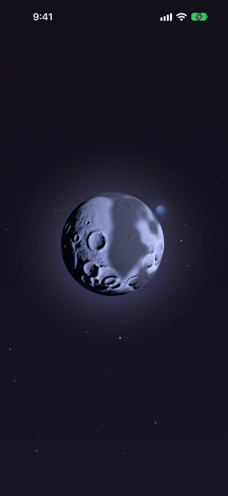
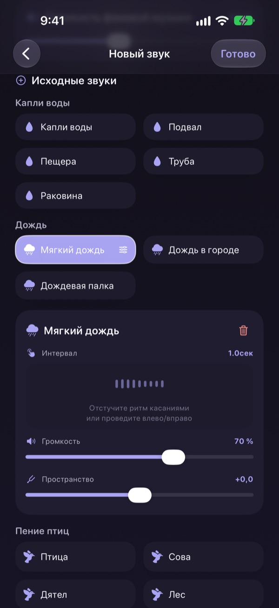
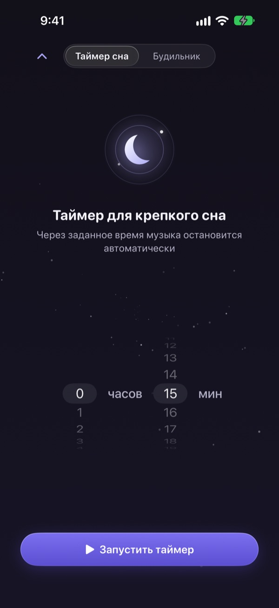
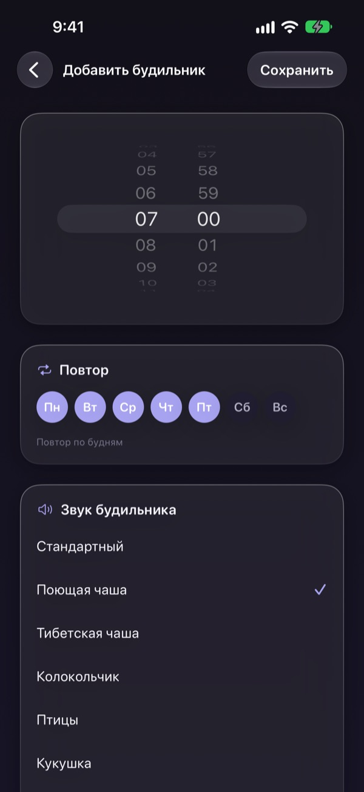
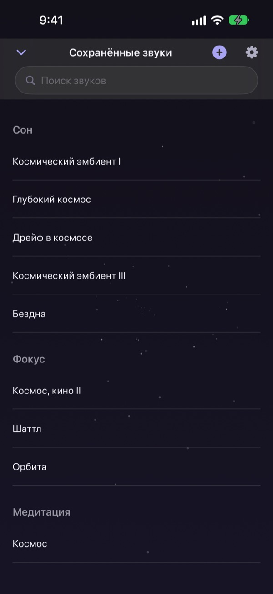

Хватит тратить ночь
на поиски нужного звука
Один раз сложите дождь, капли и поющую чашу в свой звук. Со следующей ночи достаточно коснуться луны.
Все звуки можно слушать бесплатно. Для iPhone и iPad.

Бывало, что перед сном час уходил на выбор звука?
Дождь слишком однообразный, волны слишком громкие, а в видео посреди ночи вклинивается реклама. В Dalbit вы сами складываете любимые звуки в тот, что подходит именно вам, и прячете его за одной луной.
Соберите звук из слоёв
Дождь, капли, пение птиц, поющие чаши: накладывайте их слой за слоем. Для каждого слоя настраиваются громкость, частота и место, откуда он звучит, а под всё можно подложить волны или фортепиано как фоновую музыку.
Дайте миксу имя, сохраните и возвращайтесь к нему в любую ночь.

Затихает, не будя вас
Таймер сна не обрывает звук, а медленно его приглушает. Так момент окончания не разбудит вас снова.
Звук продолжает играть с выключенным экраном и в других приложениях, а если ничего не трогать, экран сам становится темнее.

Утром будит мягко
Ставьте будильник со звуком поющей чаши, тибетской чаши, пения птиц или кукушки и повторяйте его по выбранным дням недели.

Всё в одной луне
Коснитесь луны, чтобы включить звук, и ещё раз, чтобы поставить на паузу. Смахните в сторону, чтобы сменить звук, вверх для таймера сна, вниз для сохранённых звуков.
Понравился звук? Нажмите на луну и удерживайте, чтобы добавить его в избранное.

Начать можно в три шага
- 1
Коснитесь луны
Откройте приложение, коснитесь луны, и звук сразу зазвучит.
- 2
Листайте в сторону
Смахивайте, пока не найдёте звук по душе.
- 3
Поставьте таймер и ложитесь
Смахните вверх, выберите время, и после него звук плавно стихнет.
Что умеет луна
- Касание
- воспроизведение, пауза
- Смахивание в сторону
- другой звук
- Смахивание вверх
- таймер сна и будильники
- Смахивание вниз
- сохранённые звуки
- Долгое нажатие
- добавить в избранное
Ставить на паузу и продолжать можно и из пульта воспроизведения на экране блокировки.
Слушать бесплатно, создавать больше с Premium
Бесплатно
- Все звуки
- Свои миксы из нескольких слоёв
- До трёх сохранённых миксов
- Таймер сна с плавным затуханием
- Мягкие будильники
- Избранное
Dalbit Premium
- Создавайте и сохраняйте сколько угодно миксов
Ежемесячная автопродлеваемая подписка с бесплатным пробным периодом
Подписка продлевается автоматически, если не отменить её минимум за 24 часа до конца текущего периода. Оплата списывается после окончания пробного периода. Действуют стандартные условия использования Apple (EULA).
Частые вопросы
Как включить и сменить звук?
Коснитесь луны на главном экране, чтобы включить звук, и ещё раз, чтобы остановить. Смахните в сторону для другого звука, вверх для таймера сна, вниз для своей библиотеки.
Звук остановится, если выключить экран?
Нет. Звук продолжает играть с выключенным экраном и при переходе в другое приложение. Чтобы остановить его, снова коснитесь луны или воспользуйтесь пультом на экране блокировки.
Что происходит, когда таймер сна заканчивается?
Звук не обрывается, а постепенно становится тише и затем останавливается, чтобы не разбудить вас.
Будильник не звонит.
При создании первого будильника приложение просит разрешение. Проверьте, что оно включено в Настройки > Dalbit.
Где хранятся мои миксы?
Ваши миксы, будильники и настройки хранятся только на этом устройстве. Если удалить приложение, они удалятся вместе с ним.
Что доступно бесплатно?
Все звуки, наложение слоёв и до трёх собственных миксов. Таймер сна и будильники тоже бесплатны. Premium снимает ограничение на количество миксов.
Как отменить подписку?
Откройте Настройки > Аккаунт Apple > Подписки, выберите Dalbit и отмените. Если не отменить минимум за 24 часа до конца текущего периода, подписка продлится автоматически.
Сменил телефон, и подписка пропала.
Войдите с тем же Аккаунтом Apple, откройте экран подписки в Dalbit и нажмите «Восстановить покупки».
Хочу сообщить об ошибке или предложить идею.
Напишите через раздел отзывов в настройках приложения или на почту ниже. Обычно мы отвечаем в течение нескольких дней.
Вопросы и идеи присылайте на mizzking75@gmail.com.